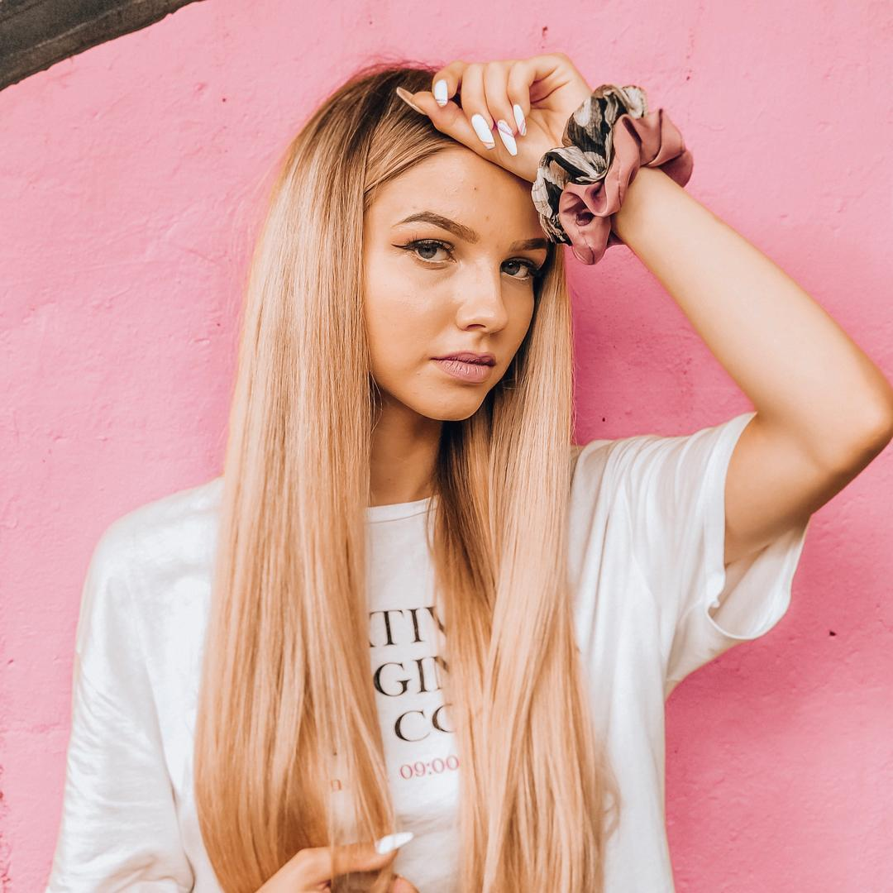

|  | ||||
| Sabina Pawlik | Kinga Sawczuk | Marlena Sójka | Maria Jeleniewska | Hubert i Sebastian |
Maria Jeleniewska - Biorąc pod uwagę liczbę obserwujących, pierwsze miejsce w rankingu zajmuje Maria Jeleniewska, czyli Mary. Aktualnie TikTokerka ma 10 milionów obserwujących. Gwiazda TikToka urodziła się 10 maja 2002 roku. Pochodzi z Poznania
Kinga Sawczuk - Kolejną gwiazdą na polskim TikToku jest Kinga Sawczuk. Pochodzi z malowniczego Przasnysza, położonego w województwie mazowieckim. Aktualnie śledzi ją ponad 5 milionów osób.
Marley - Do tej pory Marley, czyli Marlena Sójka, zdobyła ponad 8 milionów obserwatorów. Często nagrywa filmiki z chłopakiem i siostrą. Pokazuje, jak krok po kroku wykonać makijaż dzienny i wieczorowy.
Twins Style - Wspomniany kanał prowadzą bliźniacy – Hubert i Sebastian. Co ciekawe, jeden z ich filmików obejrzano już 70 milionów razy. Popularni bliźniacy zyskali ponad 5 milionów obserwatorów. Łączna liczba polubień pod filmikami zbliża się do 200 milionów
Sabina Pawlik - To kolejna TikTokerka, która zdobyła ogromną popularność. Obecnie w rankingu najpopularniejszych twórców na TikToku zajmuje 4 miejsce. Urodziła się 21 stycznia 1996 roku. Pochodzi z Wodzisławia Śląskiego. Aktualnie ma blisko 6 milionów obserwujących.